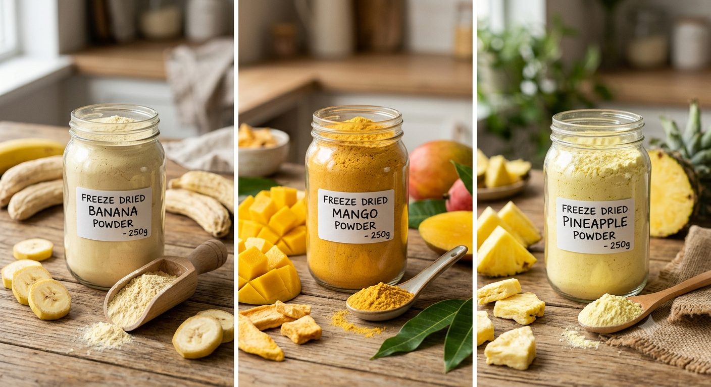

Banana, Mango & Pineapple — freeze-dried to preserve natural color, flavor and nutrition, for brands that can't compromise on quality.
Freeze-drying removes moisture from fruit at low temperature under vacuum, rather than with heat. The result is a powder that holds onto its natural color, aroma and nutritional profile far better than conventional spray-dried or hot-air dried alternatives — which is why it's the ingredient of choice for premium smoothie mixes, functional snacks, baby food and clean-label formulations.
Every batch follows the same disciplined sequence, from ripe fruit to finished powder.
Fruit is sourced at peak ripeness for maximum natural flavor and color.
Fruit is rapidly frozen to lock in structure before moisture is removed.
Frozen water sublimates directly to vapor under vacuum — no heat damage.
Dried fruit is milled and sieved to a consistent, fine powder.
Lab-tested and packed in food-grade, moisture-proof packaging.
Naturally sweet, potassium-rich, premium smoothie & bakery ingredient
Vibrant color, tropical flavor, rich in Vitamin A & C
Tangy-sweet flavor with natural bromelain content
Natural color and flavor, no additives needed
Crisp texture, clean-label ingredient
Gentle processing, no heat degradation
Natural flavoring for premium baked goods
High retention of natural micronutrients
FDA-aware labeling support and documentation for US food & nutraceutical importers.
Freeze-dried fruit powder to USA →EU-compliant documentation including pesticide & heavy-metal reports for European buyers.
Freeze-dried fruit powder to Europe →Fast shipping lanes and Halal-aware sourcing support for Gulf region importers.
Freeze-dried fruit powder to UAE →Fast shipping lanes and Halal-aware sourcing support for Kenya importers.
Freeze-dried fruit powder to Kenya →Freeze-drying is slower and more energy-intensive, but preserves color, flavor and nutrients far better than heat-based drying — reflected in both the process and the premium end-use it's suited for.
Contact us for current MOQ — freeze-dried lines can differ from our standard dehydrated/spray-dried powders due to batch processing volumes.
Yes — COA, SDS and relevant lab test reports are available on request for every lot.
Banana, mango and pineapple, with more planned as our freeze-drying capacity grows.
Email us at info@indirootexims.com or message on WhatsApp: +91 88664 02765
Contact Us View All Products